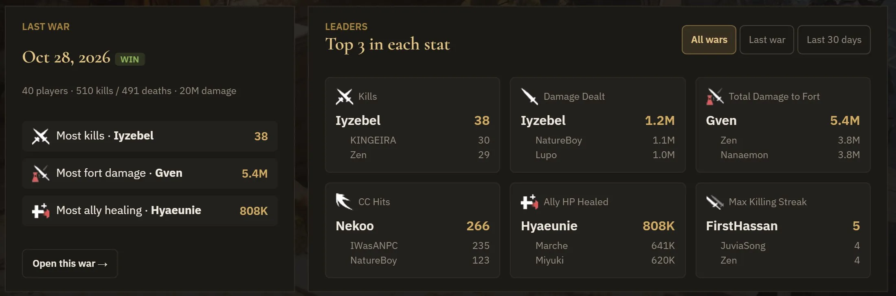
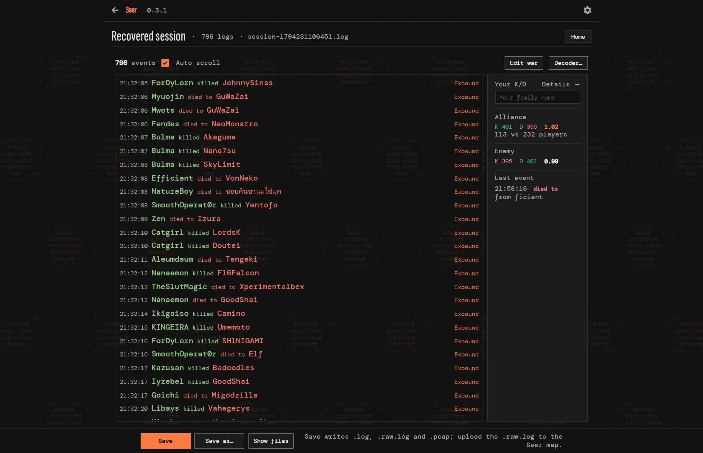
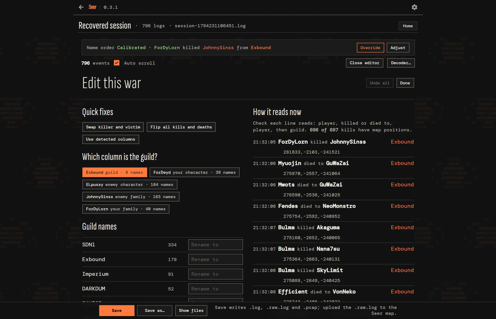
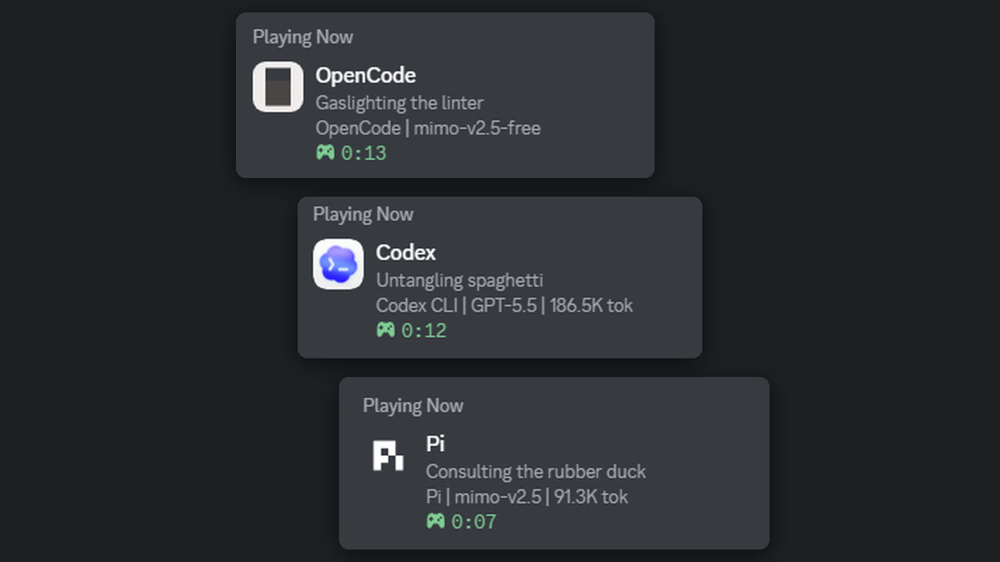
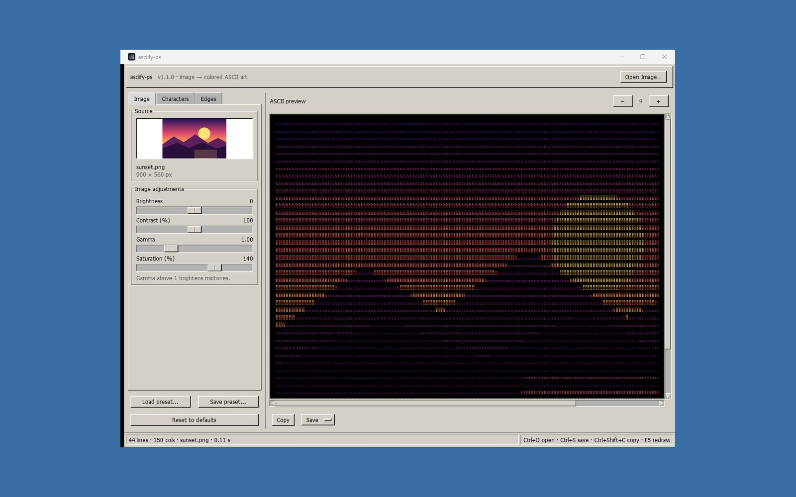

Projects




Discord bot + web dashboard · 2026
Athena
Signups, rosters, stats and kill maps for Black Desert guilds, in Discord. My guild runs its Node Wars on it every week.
- Scoreboard screenshots become per-player stats, read by Claude Haiku
- Rosters with caps, bench overflow and weekly repeats
- Every war on record, with attendance and K/D
- TypeScript
- discord.js
- Express
- Supabase
- Railway


Windows companion for Athena · 2026
Seer
Records a node war on your PC: every kill and death, with guild and place. When the war ends it uploads to Athena.
- A live kill feed with running alliance and enemy K/D
- Fix a misread name once and the whole war follows
- Every kill lands on the map, shareable by link
- Neutralinojs
- JavaScript
- Python
- Npcap
Multiplayer web game · 2026
ReliCore
Guess where and when real museum artifacts were made, on a world map. Solo, or in lobbies of up to eight players.
- 287 artifacts from the Met, Cleveland, V&A and Smithsonian
- Scored by distance and era
- Next.js
- TypeScript
- Prisma
- MapLibre GL

Desktop utility
AgentPresence
Shows which AI coding agent you're using as your Discord status.
- Rust
- Discord Rich Presence

Desktop app
asciify-ps
Windows 2000-style desktop app that turns images into coloured ASCII art.
- Python
- Tkinter